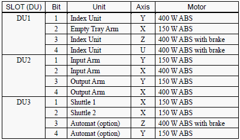
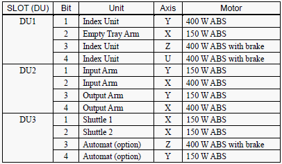

|
Dip switch to initialise encoder  |
Robot Number and Axis Number
|
Service History
Subject: NS-7000 DU 2 issue
Handler Model: NS-7000 (EEMS, NS70-23)
Controller: RC520
Date: 8 Jan 2008
Symptom
1. Unable to load into MMI upon booting up
2. Spel unable to detect DU 2 motor and power
3. Index arm 2 no torque when motor on in SPEL CT
Action
1) Unable to load into MMI upon booting up.
-->SPEL CT Background function not set.
a) In SPEL, ensure "Main" set as "Main Function"
b) In SPEL, ensure "startup" set as "Background Function"
2) Spel unable to detect DU 2 motor and power.
--> reset DU 2 encoder and perform 0 pulse calibration for input/output arm.
3) Index arm 2 no torque when motor on in SPEL CT.
-->Swapped arm 1 and 2 400W servo pack (servo driver; Motor Driver Module), same problem.
Swapped arm 1 and 2 motor power and signal cable also same.
Possible arm 2 servo motor spoilt or SSR. Awaiting spare motor.
|
Dip switch to initialise encoder  |
Robot Number and Axis Number
|
Cause
Remarks
The DIP switch to initialise encoder is on the Signal Relay Board (SKP392) in it's respective Drive Unit (DU).